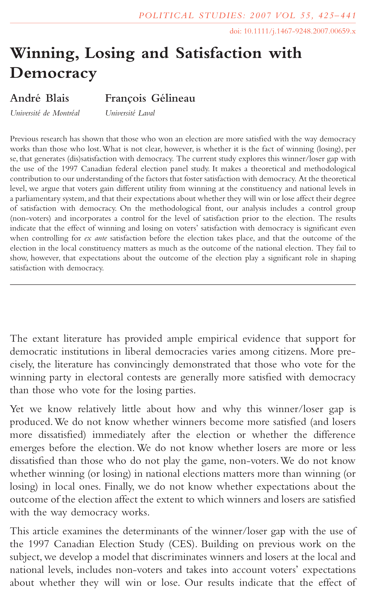
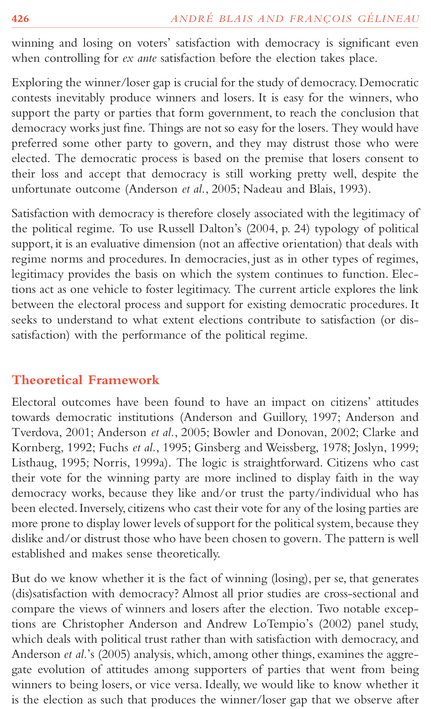
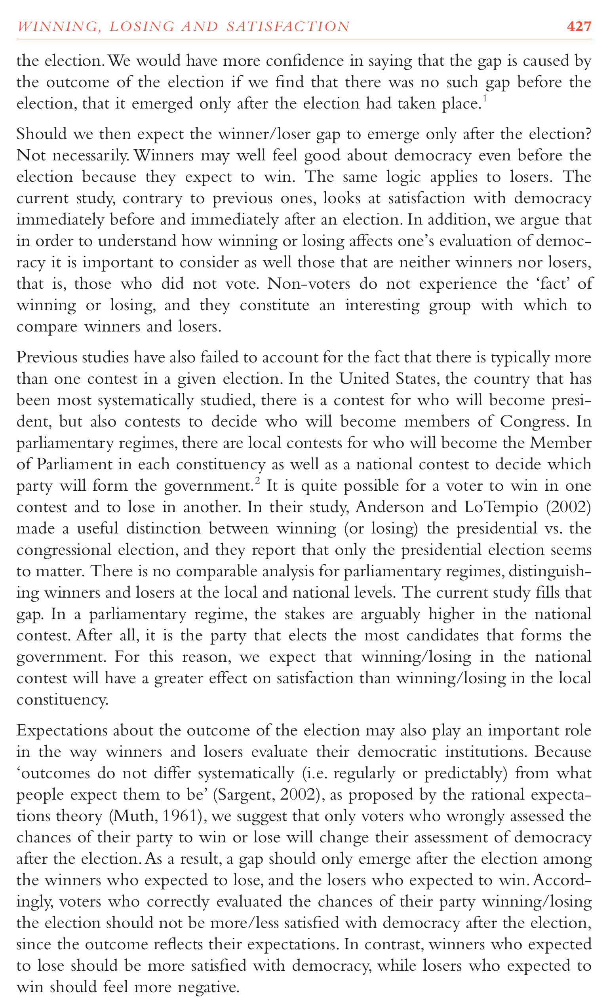
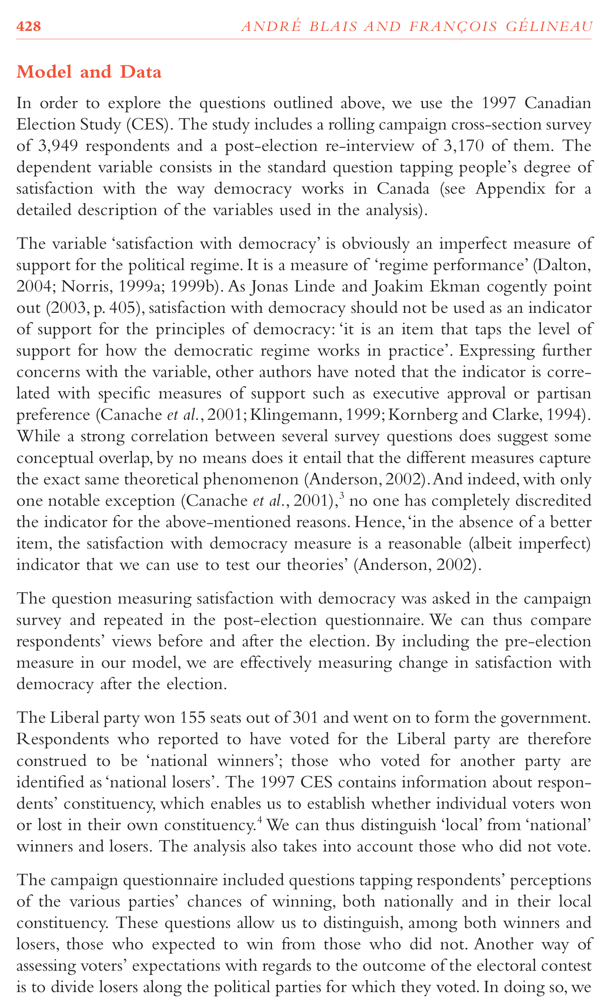
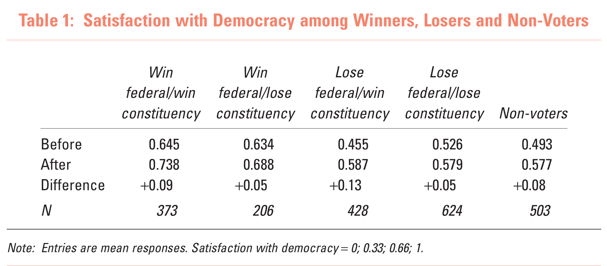
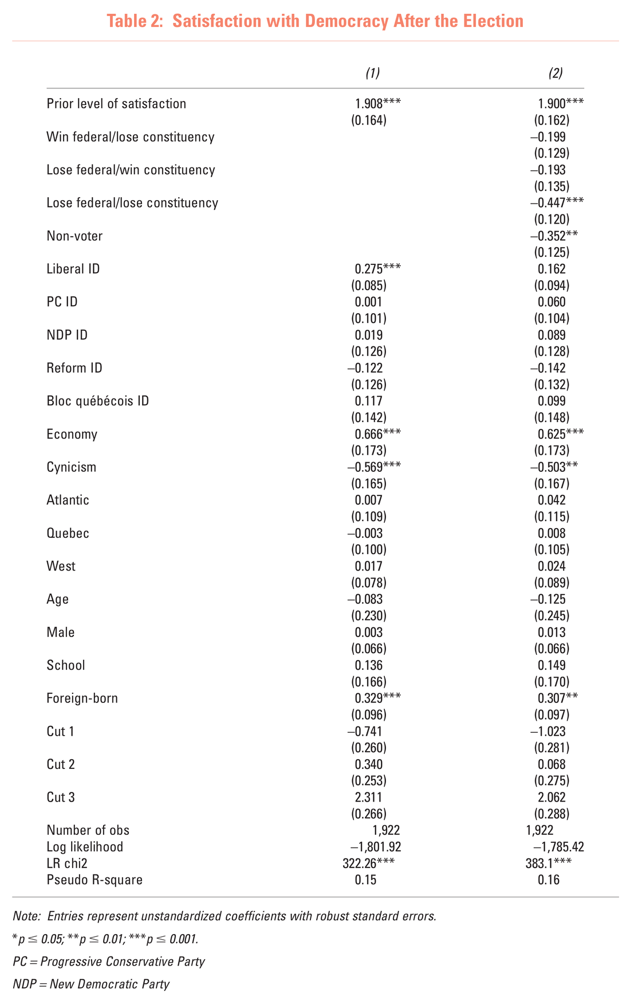
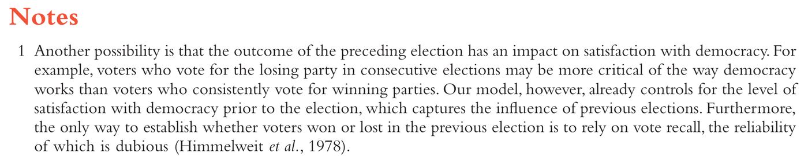
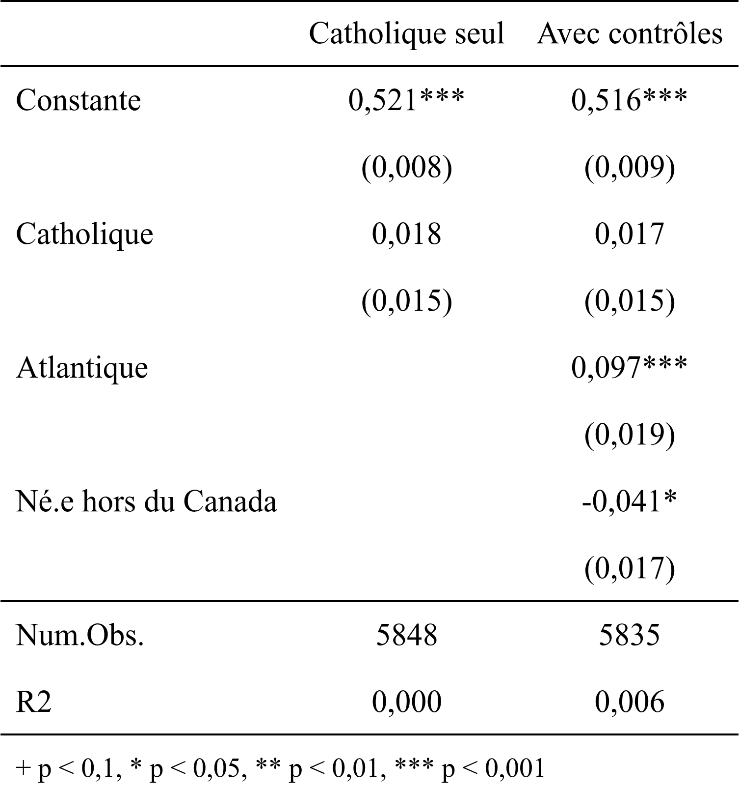
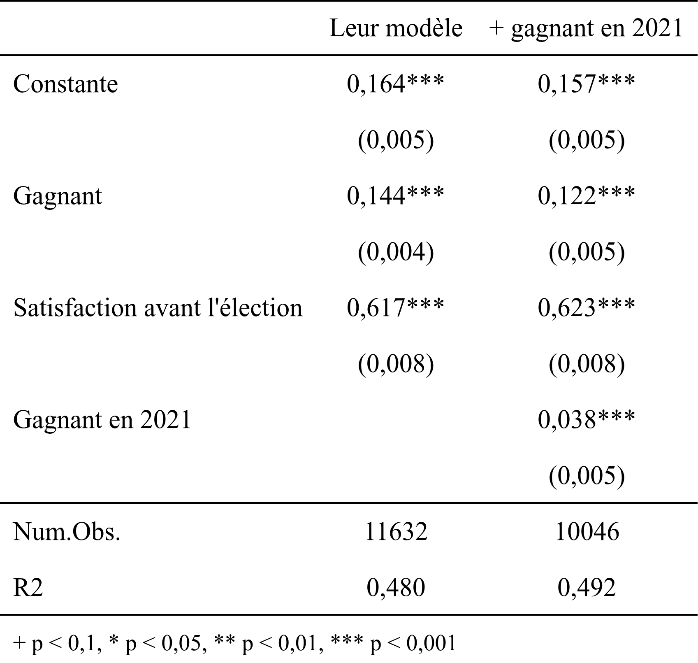

POL-2000 · Méthodologie quantitative
La régression linéaire multiple
Séance 8 · jeudi 22 octobre 2026
Faculté des sciences sociales Automne 2026
La régression linéaire multiple
Plusieurs variables explicatives à la fois.
Travail de mi-session à remettre mercredi 28 octobre.
Aujourd’hui

Zotero
Pourquoi citer, Google Scholar, puis Zotero.
« Stand on the shoulders of giants »
Pourquoi Google Scholar écrit-il ça sur sa page d’accueil ?
Pourquoi citer ?
Deux trucs de Google Scholar
Winning, Losing and Satisfaction with Democracy
A Blais, F Gélineau · Political Studies, 2007
☆ Enregistrer❝ CiterCité par …Autres articles
Obtenir@ULaval : le texte intégral, avec votre IDUL
Cité par : qui l’a lu et cité depuis. La littérature, vers l’avant.
schéma d’un résultat de Google Scholar
Zotero : du DOI à la bibliographie
- 1 Trouver le DOI
- 2 L’ajouter à Zotero
-
 3 Citer dans Word
3 Citer dans Word - 4 Produire la bibliographie
Political Studies · 2007 · vol. 55, 425-441
Winning, Losing and Satisfaction with Democracy
André Blais et François Gélineau
doi : 10.1111/j.1467-9248.2007.00659.x
une citation Ajouter/Modifier
la bibliographie APA
Les perdants sont moins satisfaits de la démocratie (Blais et Gélineau, 2007).
Références
Blais, A. et Gélineau, F. (2007). Winning, losing and satisfaction with democracy. Political Studies, 55(2), 425-441. https://doi.org/10.1111/j.1467-9248.2007.00659.x
schéma · zotero.org, gratuit, en français
Rappel : la régression multiple de la séance 7
| Intérêt pour la politique (0 à 1) | ||
|---|---|---|
| Modèle 1 | Modèle 2 | |
| Scolarité | 0,203*** | 0,187*** |
| (0 à 1) | (0,032) | (0,032) |
| Âge | 0,349*** | |
| (0 = 18 ans, 1 = 96 ans) | (0,034) | |
| Femme | −0,091*** | |
| (0 = non, 1 = oui) | (0,015) | |
| Revenu | 0,085** | |
| (8 tranches, de 0 à 1) | (0,031) | |
| Québec | 0,002 | |
| (0 = non, 1 = oui) | (0,018) | |
| Constante | 0,540*** | 0,415*** |
| (0,021) | (0,030) | |
| N | 981 | 877 |
| R² | 0,04 | 0,18 |
| *** p < 0,001 · ** p < 0,01 · * p < 0,05 Erreurs types entre parenthèses. | ||
Deux chemins entre scolarité et intérêt
Deux règles pour choisir les contrôles
Ne pas contrôler un descendant de X
une variable que X cause
ne pas la contrôler
Bloquer les chemins par la porte arrière
les causes de la cause
contrôler l’âge
Arel-Bundock (2021), chapitre 6 · schéma, aucune donnée
Sortir une variable du bruit
Le sexe entre dans le modèle
L’âge entre dans le modèle
La part propre de la scolarité
Pourquoi ajouter des variables ?
Une variable à la fois
On n’interprète pas les variables de contrôle
| (1) | |
|---|---|
| Constante | 0,415*** |
| (0,030) | |
| Scolarité (0 à 1) | 0,187*** |
| (0,032) | |
| Âge (0 à 1) | 0,349*** |
| (0,034) | |
| Femme | −0,091*** |
| (0,015) | |
| Revenu (0 à 1) | 0,085** |
| (0,031) | |
| Québec | 0,002 |
| (0,018) | |
| Num.Obs. | 877 |
| R2 | 0,182 |
+ p < 0,1, * p < 0,05, ** p < 0,01, *** p < 0,001
La variable d’intérêt
Scolarité : on l’interprète.
Âge, femme, revenu, Québec
Des contrôles : on ne les interprète pas.
Ils sont là pour que la comparaison soit juste pour la scolarité.
0,349 : l’âge, à scolarité égale. Pas l’effet de l’âge.
schéma · Arel-Bundock (2021), chap. 6 · « le piège du tableau 2 », Westreich et Greenland (2013)
Ce que contrôler ne règle pas
Une cause non mesurée
On ne contrôle que ce qu’on a mesuré.
biais par variable omiseséance 13
Un contrôle mal mesuré
Le chemin ne se ferme qu’en partie.
erreur de mesureséance 13
Le sens de la causalité
Ajouter des variables ne dit pas qui cause qui.
simultanéitéséance 13
Cause commune ou conséquence
Le tableau ne montre pas le sens de cette flèche.
biais post-traitementséance 11
Schémas · vocabulaire d’Arel-Bundock (2021)
- 1Question
- 2Littérature
- 3Hypothèse
- 4Données
- 5Pertinence
- 6Contribution
- 7Vous
Blais et Gélineau (2007)




Blais, A., & Gélineau, F. (2007). Winning, losing and satisfaction with democracy. Political Studies, 55(2), 425–441. https://doi.org/10.1111/j.1467-9248.2007.00659.x
Blais et Gélineau (2007), Political Studies, 55(2), p. 425
- 1Question
- 2Littérature
- 3Hypothèse
- 4Données
- 5Pertinence
- 6Contribution
- 7Vous
Pourquoi ce sujet ?
Gagner une élection rend-il plus satisfait de la démocratie ?

▲ déjà plus satisfaits ▲ les cinq groupes montent après l’élection
sans gagner / perdre avec gagner / perdre leur X · comparé à « gagner partout » le reste : des contrôles, on ne les lit pas satisfaction avant l’élection : contrôléeLeur conclusion
À satisfaction égale avant l’élection, les gagnants deviennent plus satisfaits que les perdants.
Deux façons de contribuer
1997 → 2025 : leur résultat tient-il encore ?
Répondre à une faiblesse qu’ils reconnaissent eux-mêmes
Votre TP 1, étape 6 : la contribution. Les deux comptent.
Notre question
Après l’élection du 28 avril 2025, les gagnants sont-ils plus satisfaits de la démocratie que les perdants ?
Hypothèse : oui, à satisfaction égale avant l’élection.
Hypothèse nulle : aucune différence.
Ils y avaient pensé

1 2L’élection d’avant pourrait compter : perdre deux fois de suite rend plus critique.
La satisfaction avant l’élection la « capte » déjà.
En 2025, on peut le tester.
Le souvenir du vote passé est douteux.
Vrai aussi en 2025.
Trois modèles
lm(apres ~ gagnant) Les gagnants sont-ils plus satisfaits après l’élection ?
lm(apres ~ gagnant + avant) … à satisfaction égale avant l’élection
lm(apres ~ gagnant + avant + gagnant_2021) … et à vote de 2021 égal (leur note 1)
Y = apres, la satisfaction après l’élection · X = gagnant
Du modèle 1 au modèle 3
lm(apres ~ gagnant) 0,266
coefficient de gagnantTout l’écart passe pour l’effet de gagner.
Planifions notre code
# 1. La régression qu'on veut, au bout du compte
# lm(apres ~ gagnant + avant + gagnant_2021, data = df_clean)
# 2. Charger les données
# 3. Créer df_clean
# 4. Quelles variables ? Comment les nettoyer ?
# 5. Nettoyer chacune
# 6. Faire chaque modèle de régression
# 7. Interpréter les résultats
# 8. Créer le tableau
# 9. Sortir le tableau (Word)
# 10. Sauvegarder df_cleanD’abord les commentaires. Le code vient ensuite, sous chacun.
1997 et 2025
Lire le tableau : le coefficient de Gagnant

Vérifié. Maintenant, faire mieux
1997 → 2025 : leur résultat tient-il encore ?
Répondre à une faiblesse qu’ils reconnaissent eux-mêmes
Votre TP 1, étape 6 : la contribution. Les deux comptent.
Lire le tableau : Gagnant, encore

Trois choses
Jeudi 5 novembre
De la question au tableau de régression.
Merci.
Faculté des sciences sociales POL-2000 · Automne 2026
Annexe : tout le code
Blais et Gélineau en 2025, étape par étape. À refaire chez vous, ligne par ligne.
Avant de commencer, dans Positron
Dans votre projet Positron :
# un nouveau fichier : seance8.R
install.packages(c("modelsummary", "pandoc")) # une seule foisces2025.rds doit être dans le dossier du projet (séance 2).
- 1Charger
- 2Y : après
- 3X : gagnant
- 4Contrôle : avant
- 5Modéliser
- 6Tableau
- 7Faire mieux
Charger, et préparer df_clean
> library(dplyr)
> library(haven)
haven : pour lire les codes de la CES
> df_raw <- readRDS("ces2025.rds")
ces2025.rds, sauvegardé à la séance 2
> nrow(df_raw)
[1] 20180
vous devriez voir 20 180
> df_clean <- data.frame(id = 1:nrow(df_raw))
df_raw ne change jamais
> ▍- 1Charger
- 2Y : après
- 3X : gagnant
- 4Contrôle : avant
- 5Modéliser
- 6Tableau
- 7Faire mieux
Y : satisfait de la démocratie, après l’élection ?
> table(as_factor(df_raw$pes25_dem_sat))
1. Very satisfied 2. Fairly satisfied
2671 6847
3. Not very satisfied 4. Not satisfied at all
2619 1454
5. Don't know / Prefer not to answer
484 pes25 : le sondage après l’élection, aux mêmes personnes
> ▍- 1Charger
- 2Y : après
- 3X : gagnant
- 4Contrôle : avant
- 5Modéliser
- 6Tableau
- 7Faire mieux
Y : de 0 (pas du tout) à 1 (très)
> df_clean$apres <- case_when( df_raw$pes25_dem_sat == 1 ~ 1, # très satisfait df_raw$pes25_dem_sat == 2 ~ 0.67, # plutôt satisfait df_raw$pes25_dem_sat == 3 ~ 0.33, # peu satisfait df_raw$pes25_dem_sat == 4 ~ 0 # pas du tout satisfait )
la recette de la séance 4
> table(df_clean$apres, useNA = "ifany")
0 0.33 0.67 1 <NA> 1454 2619 6847 2671 6589
NA : pas de réponse après l’élection, ou « ne sait pas »
> ▍- 1Charger
- 2Y : après
- 3X : gagnant
- 4Contrôle : avant
- 5Modéliser
- 6Tableau
- 7Faire mieux
X : pour qui avez-vous voté ?
> table(as_factor(df_raw$pes25_votechoice2025))
1. Liberal Party 2. Conservative Party
5773 4006
3. NDP 4. Bloc Québécois
960 907
5. Green Party 6. People's Party
218 101
7. Another party (specify) 8. I spoiled my vote
43 39
9. Don't know / Prefer not to answer
519 les libéraux ont formé le gouvernement
> ▍- 1Charger
- 2Y : après
- 3X : gagnant
- 4Contrôle : avant
- 5Modéliser
- 6Tableau
- 7Faire mieux
X : gagnant (1) ou perdant (0)
> df_clean$gagnant <- case_when( df_raw$pes25_votechoice2025 == 1 ~ 1, # les libéraux ont gagné df_raw$pes25_votechoice2025 %in% 2:7 ~ 0 # un autre parti # 8 (vote annulé), 9 (ne sait pas) : aucune ligne, donc NA )
> table(df_clean$gagnant, useNA = "ifany")
0 1 <NA> 6235 5773 8172
NA : n’a pas voté, vote annulé, ne sait pas
> ▍- 1Charger
- 2Y : après
- 3X : gagnant
- 4Contrôle : avant
- 5Modéliser
- 6Tableau
- 7Faire mieux
Le contrôle : la même question, avant
> df_clean$avant <- case_when( df_raw$cps25_demsat == 1 ~ 1, df_raw$cps25_demsat == 2 ~ 0.67, df_raw$cps25_demsat == 3 ~ 0.33, df_raw$cps25_demsat == 4 ~ 0 )
cps25 : la même question, pendant la campagne
> table(df_clean$avant, useNA = "ifany")
0 0.33 0.67 1 <NA>
1594 4313 10576 2971 726 > ▍- 1Charger
- 2Y : après
- 3X : gagnant
- 4Contrôle : avant
- 5Modéliser
- 6Tableau
- 7Faire mieux
Avant, après : leur tableau 1, en 2025
> df_clean |> filter(!is.na(gagnant), !is.na(apres), !is.na(avant)) |> group_by(gagnant) |> summarise(avant = mean(avant), apres = mean(apres), n = n())
# A tibble: 2 × 4
gagnant avant apres n
<dbl> <dbl> <dbl> <int>
1 0 0.513 0.481 5998
2 1 0.709 0.746 5634 le tableau 1 de l’article, en 2025
> ▍- 1Charger
- 2Y : après
- 3X : gagnant
- 4Contrôle : avant
- 5Modéliser
- 6Tableau
- 7Faire mieux
Deux modèles : seul, puis à satisfaction égale avant
> modele1 <- lm(apres ~ gagnant, data = df_clean)
> modele2 <- lm(apres ~ gagnant + avant, data = df_clean)
à satisfaction égale avant l’élection
> nobs(modele1)
[1] 11796
vous devriez voir 11 796
> nobs(modele2)
[1] 11632
> ▍- 1Charger
- 2Y : après
- 3X : gagnant
- 4Contrôle : avant
- 5Modéliser
- 6Tableau
- 7Faire mieux
library(modelsummary)options(OutDec = ",")
noms <- c("(Intercept)" = "Constante", "gagnant" = "Gagnant",
"avant" = "Satisfaction avant l'élection")
modeles <- list("Gagnant seul" = modele1, "À satisfaction égale avant" = modele2)
modelsummary(modeles, stars = TRUE, coef_rename = noms,
gof_map = c("nobs", "r.squared"))
deux modèles = deux colonnes
- 1Charger
- 2Y : après
- 3X : gagnant
- 4Contrôle : avant
- 5Modéliser
- 6Tableau
- 7Faire mieux
Le même tableau, dans Word
modelsummary(modeles, stars = TRUE, coef_rename = noms,
gof_map = c("nobs", "r.squared"), output = "gagnants2025.docx")gagnants2025.docx apparaît dans le dossier du projet. Copiez-le dans votre travail.
Si R se plaint de pandoc : pandoc::pandoc_install(), une seule fois.
# 10. Sauvegarder df_clean, pour ne pas tout refaire
saveRDS(df_clean, "df_clean.rds")- 1Charger
- 2Y : après
- 3X : gagnant
- 4Contrôle : avant
- 5Modéliser
- 6Tableau
- 7Faire mieux
Pour qui avez-vous voté en 2021 ?
> table(as_factor(df_raw$cps25_vote_2021))
1. Liberal Party 2. Conservative Party
6144 4247
3. NDP 4. Bloc Québécois
2408 1317
5. Green Party 6. Another party (please specify)
519 268
7. Don't know/ Prefer not to answer
1000 cps25 : demandé pendant la campagne, avant le résultat de 2025. Les libéraux avaient aussi gagné en 2021
> ▍- 1Charger
- 2Y : après
- 3X : gagnant
- 4Contrôle : avant
- 5Modéliser
- 6Tableau
- 7Faire mieux
gagnant_2021 : gagnant (1) ou perdant (0) en 2021
> df_clean$gagnant_2021 <- case_when( df_raw$cps25_vote_2021 == 1 ~ 1, # les libéraux avaient gagné en 2021 df_raw$cps25_vote_2021 %in% 2:6 ~ 0 # un autre parti # 7 (ne sait pas) ou pas voté en 2021 : NA )
> table(df_clean$gagnant_2021, useNA = "ifany")
0 1 <NA> 8759 6144 5277
NA : n’a pas voté en 2021, n’avait pas l’âge, ne sait pas
> ▍- 1Charger
- 2Y : après
- 3X : gagnant
- 4Contrôle : avant
- 5Modéliser
- 6Tableau
- 7Faire mieux
Leur modèle, plus le vote de 2021
> modele3 <- lm(apres ~ gagnant + avant + gagnant_2021, data = df_clean)
une seule variable de plus
> nobs(modele3)
[1] 10046
vous devriez voir 10 046 : moins de monde
> ▍- 1Charger
- 2Y : après
- 3X : gagnant
- 4Contrôle : avant
- 5Modéliser
- 6Tableau
- 7Faire mieux
noms <- c(noms, "gagnant_2021" = "Gagnant en 2021")
modeles <- list("Leur modèle" = modele2, "+ gagnant en 2021" = modele3)
modelsummary(modeles, stars = TRUE, coef_rename = noms,
gof_map = c("nobs", "r.squared"))
leur modèle, puis le nôtre
Et si X était mesuré avant le résultat ?
> table(as_factor(df_raw$cps25_votechoice))
1. Liberal Party 2. Conservative Party
6528 4644
3. NDP 4. Bloc Québécois
1258 1011
5. Green Party 6. Another party (please specify)
317 82
7. Don't know/ Prefer not to answer 8. People's Party
1887 182 cps25 : pendant la campagne. Attention, d’autres codes : 7 = ne sait pas, 8 = PPC
> ▍gagnant_campagne : l’intention de vote
> df_clean$gagnant_campagne <- case_when( df_raw$cps25_votechoice == 1 ~ 1, # pensait voter libéral df_raw$cps25_votechoice %in% c(2:6, 8) ~ 0 # un autre parti (8 : le PPC) # 7 (ne sait pas) : NA )
> modele4 <- lm(apres ~ gagnant_campagne + avant, data = df_clean)
à la place de gagnant : une seule chose change
> round(coef(modele4), 3)
(Intercept) gagnant_campagne avant
0,167 0,137 0,618 gagnant_campagne : presque la même chose que gagnant
> ▍